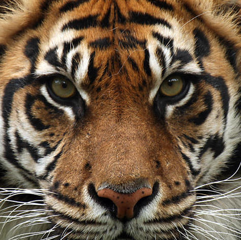
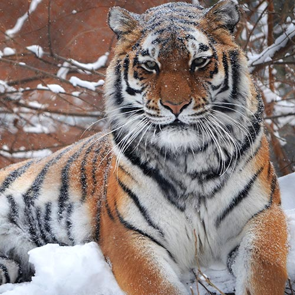
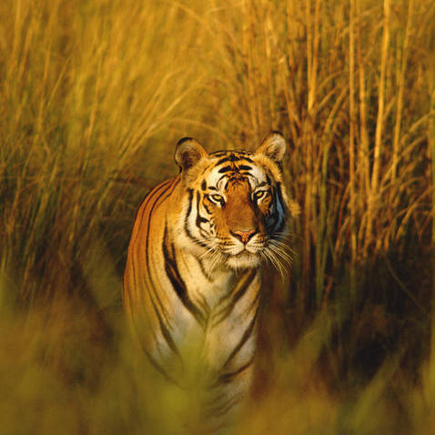
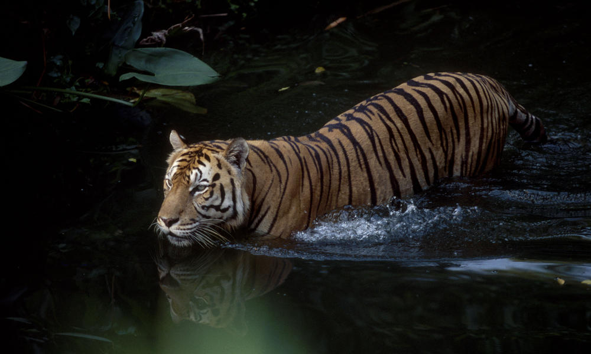

About Tigers
Tigers are the largest of all Asian big cats. They usually hunt and stalk their prey alone and consume up to 88 pounds of meat at one time. Every two years, tigers give birth to two to four cubs but juvenile mortality is high, which means only about half of all cubs do not survive more than two years. In the wild, tigers have reached up to 20 years of age. Today, there is a total of about 3,000-4,500 tigers living in the wild. Tigers can be found in a variety of habitats such as tropical rainforests, evergreen forests, temperate forests, mangrove swamps, grasslands, and savannas. At one time, tigers ranged from Turkey through South and Southeast Asia to the far eastern shores of the continent but now they can only be found in South and Southeast Asia, China and the Russian Far East. These animals typically live for about 16-18 years in captivity and are between 6-10 ft long. An adult male can weigh up to 200-670 lbs while adult females weigh between 140-370 lbs.
Why They Matter
Tigers are a large predator, which means that they play a key role in maintaining healthy ecosystems. By saving tigers, we are also helping people because those ecosystems provide nature and humans with fresh water, food, and health. These animals also assist very poor communities because tourists go where tigers are. Tourism brings in money for communities that do not have many alternatives for income.
   Conservation
Tigers are an endangered species. They are threatened by habitat loss, poaching and illegal wildlife trade, human conflict, and even climate change. Tigers have lost 93% of their historical range because their habitats have been destroyed, degraded and fragmented by humans.
In order to save tigers, we must protect their habitats. We can allow tigers to roam and even preserve other endangered species that live there by conserving those places. Because tigers are so territorial, we have to save around 25,000 arces of forest to save just one tiger.
You can help save this animal by adopting a tiger here. By making a symbolic tiger adoption, you can help save these endangered animals from extinction and support WWF's conservation efforts.